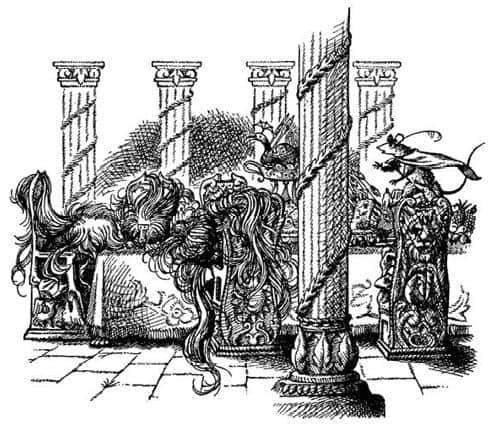
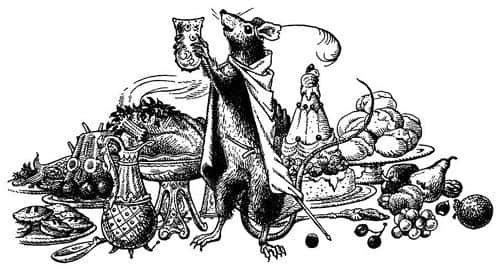

Üç Uyurlar
Rüzgâr hiç kesilmedi, ama her gün biraz daha hafifledi ve sonunda dalgaların hafif bir esintinin dalgacıklarından farkı kalmadı; sanki bir gölde yelken açmışlar gibi gemi saatler boyunca suyun üzerinde kaydı. Her gece, Narnia’da kimsenin görmediği takımyıldızların doğudan yükseldiğini görüyorlardı. Lucy korkuyla karışık bir neşeyle, belki de hiç kimsenin hayatı boyunca bu yıldızları görmediğini düşünüyordu. Yıldızlar büyük ve parlak, gecelerse ılıktı. Çoğunluk güvertede uyuyor ve geç saatlere kadar sohbet ediyor ya da geminin yanından eğilip pruvanın sıçrattığı köpüklerin ışıltılı dansını seyrediyordu.
Arkalarındaki günbatımı öylesine kırmızı, öylesine canlıydı ve o kadar geniş bir alana yayılmıştı ki, gökyüzü büyümüş gibi görünüyordu. İşte o akşam karayı gördüler. Adaya yaklaşırlarken, arkalarındaki ışık bu yeni ülkenin koylarını ve burunlarını alevler içindeymiş gibi gösteriyordu. Biraz sonra kıyı boyunca ilerlemeye başladılar. Adanın batı burnu kızıl gökyüzünün önünde kartondan kesilmiş bir şekil gibi kapkara yükseliyordu ve bu sayede adanın nasıl bir yer olduğunu görebiliyorlardı. Dağlık değildi ama yamaçlarında yastıklara benzeyen birçok küçük tepe vardı. Adadan – Lucy’nin bir şeye benzetemediği, Edmund ve Rhince’in çürük kokusu dediği – çekici bir koku geliyordu, ama Caspian, “Ne demek istediğinizi biliyorum” dedi.
Uzun süre güzel ve derince bir liman bulma umuduyla burundan buruna ilerlediler, ama sonunda geniş fakat sığ bir körfezle yetinmek zorunda kaldılar. Açık denizin sakin görüntüsüne rağmen kumsalda dalgalar kırılıyordu, Şafak Yıldızı’nı kıyıya istedikleri kadar yaklaştıramadılar. Kumsaldan oldukça uzakta demirlediler; kayıkla, ıslanarak ve düşe kalka karaya çıktılar. Lord Rhoop Şafak Yıldızı’nda kalmıştı. Başka ada görmek istemiyordu. Bu adada kaldıkları süre boyunca, kıyıya vuran dalga sesleri sürekli kulaklarındaydı.
İki adam gemide nöbetçi olarak bırakıldı ve Caspian diğerlerini adanın içlerine doğru yöneltti, ama fazla uzağa değil, çünkü araştırma yapmak için çok geçti, yakında hava kararacaktı. Macerayla karşılaşmak için fazla uzağa gitmelerine gerek kalmadı. Körfezin başındaki vadide ne bir yol, ne bir iz, ne de bir yerleşim belirtisi vardı. Ayakları altında, Edmund ve Lucy’nin süpürgeotu olduğunu düşündüğü yer yer küçük çalılıklarla kaplı güzel, yumuşak bir zemin vardı. Botanik bilgisi oldukça iyi olan Eustace onların süpürgeotu olmadığını söyledi, muhtemelen haklıydı; ama süpürgeotuna benzeyen bir şeydi.
Kıyıdan bir ok atımı uzaklaşmadan Drinian, “Bakın! Şu da ne?” dedi ve herkes durdu.
“Büyük ağaçlar mı?” dedi Caspian.
“Sanırım kule” dedi Eustace.
“Devler olabilir” dedi Edmund daha alçak bir sesle.
“Bunu anlamanın tek yolu yanlarına gitmek” dedi Bastıbacak. Kılıcını çekip pıtır pıtır yürüyerek herkesin önüne geçti.
“Bir harabe sanırım” dedi Lucy oraya iyice yaklaştıklarında. Tahmini, o ana kadar yapılan tahminlerin en iyisiydi. Gördükleri şey, gri sütunlarla çevrili ve zemini düzgün taşlarla döşenmiş, çatısı olmayan geniş ve dikdörtgen biçiminde bir yapıydı. Bir ucundan diğerine neredeyse yerlere değen koyu kırmızı bir örtüyle kaplı, uzun bir masa gördüler. Masanın her iki tarafında, üzerlerinde ipek minderler olan, ince oymalı çok sayıda taş sandalye vardı. Fakat masanın üzerinde Yüce Kral Peter’in Cair Paravel’de oturduğu zamanları aratmayan bir ziyafet sofrası kuruluydu. Hindiler, kazlar, tavuskuşları, yabandomuzu kelleleri ve geyik etleri, ejderha, fil ya da pupa yelken giden bir gemiye benzeyen turtalar vardı, dondurmalar, kıpkırmızı ıstakozlar ve pırıl pırıl somon balıkları, fındıklar, üzümler, ananaslar, şeftaliler, narlar, karpuzlar ve domatesler vardı. Altın ve gümüşten yapılmış tuhaf biçimli bardaklar ve sürahiler vardı; meyvelerin ve şarabın kokusu bir mutluluk vaadi gibi onlara doğru uçuşuyordu.
“Vay be!” dedi Lucy.
Yavaş yavaş ve sessizce yaklaştılar.
“Peki misafirler nerede?” diye sordu Eustace.
“Bu açığı kapatabiliriz, efendim!” dedi Rhince.
“Bakın!” dedi Edmund aniden. Artık sütunların içine girmiş, döşeme taşlarının üzerinde durmaktaydılar. Herkes Edmund’un işaret ettiği yere baktı. Sandalyelerin hepsi boş değildi. Masanın başındaki ve onun yanındaki iki sandalyede bir şey, ya da muhtemelen üç şey vardı.
“Ne onlar?” diye sordu Lucy fısıltıyla. “Masada oturanlar kunduza benziyor.”
“Ya da kocaman bir kuş yuvasına” dedi Edmund.
“Bana saman yığınıymış gibi görünüyor” dedi Caspian.
Bastıbacak ileri fırladı, bir sandalyeye ve oradan da masaya sıçrayarak mücevher kakmalı kupalar, fildişi tuzluklar ve meyve tabakları arasında bir dansçı çevikliğiyle ilerledi. Masanın sonundaki esrarengiz gri yığının dibine kadar koştu, onlara baktı, dokundu ve sonra:
“Sanırım bunlar savaşamazlar” diye bağırdı.
Artık herkes yaklaşmış ve sandalyede oturan o üç şeyin, uzaktan anlaşılmasa da insan olduğunu görmüştü. Kır saçları gözlerinin üzerini örterek yüzlerini tamamen gizleyene kadar uzamıştı. Masa örtüsünün üzerine yayılan sakalları, böğürtlenlerin bir çite dolanması gibi, birbirine karışarak düğümlenmiş, bütün tabakların ve kadehlerin etrafını sarmış, oradan da masanın kenarından yere sarkmıştı. Enselerindeki saçları sandalyelerinin arkasına kadar uzamış ve böylece ayırt edilemez olmuşlardı. Aslında üç adam, saçtan başka bir şey değildi neredeyse.
“Ölü mü?” dedi Caspian.
“Sanmam, efendim” dedi Bastıbacak, pençeleriyle adamlardan birinin elini saç yumağının arasından kaldırarak. “Bu adam sıcak ve kalbi atıyor.”
“Bu adam da ve şu da” dedi Drinian.
“Hey, sadece uyuyorlar” dedi Eustace.
“Ama” dedi Edmund, “saçları bu kadar uzayabildiğine göre uzun bir uyku olmalı.”

“Büyülü bir uyku olmalı” dedi Lucy. “Bu adaya iner inmez buranın büyülü olduğunu hissetmiştim. Ah! Buraya büyü bozmaya mı geldik?”
“Deneyebiliriz” dedi Caspian ve en yakındakini sarsmaya başladı. Bir an için herkes bunun işe yarayacağını düşünmüştü, çünkü adam derin bir nefes aldı ve “Artık doğuya gitmeyeceğim. Kürekleri Narnia’ya çekin” diye mırıldandı. Sonra, neredeyse öncekinden daha derin bir uykuya daldı: Başı masaya doğru üç-beş santim daha sarktı ve onu uyandırmak için harcanan tüm çabalar sonuçsuz kaldı. İkincisinde de durum aynıydı. “Hayvanlar gibi yaşamak için doğmadık. Fırsat varken doğuya – güneşin ardındaki ülkelere – gidelim” dedi ve yığıldı kaldı. Üçüncüsüyse sadece, “Hardal lütfen” deyip derin derin uyudu.
“Kürekleri Narnia’ya çekin, ha?” dedi Drinian.
“Evet” dedi Caspian, “haklısın Drinian. Sanırım araştırmanın sonuna geldik. Yüzüklerine bakalım. Evet bunlar onların armaları. Bu Lord Revilian. Bu Lord Argoz ve bu da Lord Mavramorn.”
“Ne yapsak onları uyandıramıyoruz” dedi Lucy, “ne yapacağız?”
“Tüm Majestelerinden özür dilerim” dedi Rhince, “ama bunu tartışırken neden oturmuyoruz? Her gün böyle bir yemek bulamayız.”
“Yaşamına değmez” dedi Caspian.
“Doğru, doğru” dedi gemicilerden birçoğu. “Etraf büyüyle dolu. Gemiye ne kadar erken dönersek o kadar iyi.”
“İnanın bana” dedi Bastıbacak, “bu lordlar şu yiyeceklerden dolayı yedi yıldır uyuyorlar.”
“Canımı kurtarmak için bile onlara dokunmazdım” dedi Drinian.
“Hava alışılmadık bir biçimde çabuk kararıyor” dedi Rynelf.
“Gemiye dönelim, gemiye dönelim” diye mırıldandı adamlar.
“Gerçekten” dedi Edmund, “haklı olduklarını düşünüyorum. Üç uyurlara ne yapacağımıza yarın karar veririz. Yiyecekleri yemeye cesaret edemeyiz, geceyi burada geçirmenin de bir anlamı yok. Her taraf büyü ve tehlike kokuyor.”
“Belki bana düşmez ama Kral Edmund’la tamamen aynı fikirdeyim” dedi Bastıbacak, “ama ben gün doğana kadar bu masada oturacağım.”
“Neden?” dedi Eustace.
“Çünkü” dedi fare, “bu çok büyük bir macera ve hiçbir tehlike, Narnia’ya geri döndüğümde insanların kafasında korkup kaçtığıma dair bir şüphe uyanması tehlikesinden daha büyük olamaz.”
“Ben seninle kalacağım Bastıbacak” dedi Edmund.
“Ben de” dedi Caspian.
“Ben de” dedi Lucy. Eustace de gönüllü olarak kalmak istedi. Bu onun için çok cesur bir davranıştı, çünkü bu tür şeyleri hiç okumamış ve hatta Şafak Yıldızı’na binene kadar duymamıştı. Onun için her şey, diğerleri için olduğundan daha zordu.
“Yalvarırım Majesteleri…” diye başladı Drinian.
“Hayır, Kaptan” dedi Caspian. “Senin yerin gemi, beşimiz boş boş otururken sen bütün gün çalıştın.” Bu konuda bir sürü tartışma yaşandı, ama sonunda Caspian’ın dediği oldu. Alacakaranlıkta tayfalar sahile dönerken, Bastıbacak dışında, beş nöbetçiden hiçbiri, içinde o ürpertiyi hissetmekten alamıyordu kendini.
O tehlikeli masada oturacakları yerleri seçmeleri biraz zaman aldı. Muhtemelen herkesin nedeni aynıydı, ama kimse bunu itiraf edemedi. Çünkü yapılabilecek en kötü seçimdi bu. İnsan, ölü olmasa bile kesinlikle canlı da olmayan o üç iğrenç kıllı şeyin yanında tüm gece oturmaya zor dayanırdı. Bununla beraber diğer uçta otururlarsa hava karardıkça onları seçememeye başlayacaklar ve hareket edip etmediklerini göremeyeceklerdi. Saat ikiye geldiğinde hiç göremeyeceklerdi – hayır, buna ihtimal bile yoktu. Masanın çevresinde, “Burası nasıl?” ya da “Belki biraz daha ileriye” ya da “Neden bu tarafta oturmayalım?” diyerek şaşkın şaşkın dolaştılar ve sonunda öbür uca değil, ortalarda, üç uyurlara yakın bir yere yerleştiler. Saat artık ondu ve hava eni konu kararmıştı. O tuhaf takımyıldızları doğuda pırıl pırıl yanıyordu. Bunlar yerine Narnia göğünün Leopar, Gemi ve diğer dost yıldızlarını görmek Lucy’nin daha çok hoşuna giderdi.
Pelerinlerine sarındılar ve sessizce oturup beklediler. Başlangıçta biraz konuşmaya çalıştılar, ama söyleyecek fazla bir şey yoktu. Oturmaya devam ettiler ve dalga seslerini dinlediler.
Yüzyıllar gibi geçen saatlerden sonra, hepsi de uykuya dalmış olduklarını fark ettikleri an uyandılar. Yıldızlar son gördükleri zamanki yerlerinden farklı yerlerdeydi. Doğudaki çok ince bir grilik dışında gökyüzü kapkaranlıktı. Üşümüşlerdi, her tarafları tutulmuştu ve susamışlardı. Hiçbiri konuşmadı, çünkü en sonunda bir şeyler olmaya başlamıştı.
Önlerinde, sütunların ötesinde alçak bir tepenin yamaçları uzanıyordu. Yamaçta bir kapı açılmış, kapıda bir ışık belirmiş, bir şekil dışarıya çıkmış ve ardından kapı kapanmıştı. Şekil bir mum taşıyordu ve açıkça görebildikleri tek şey bu ışıktı. Yavaşça onlara yaklaştı ve sonunda onların karşısında masanın öbür yanında durdu. Artık onun, kollarını açıkta bırakan açık mavi, uzun bir elbise giymiş bir kız olduğunu görebiliyorlardı. Şapka giymemişti ve sarı saçları sırtından aşağı dökülüyordu. Ona baktıklarında güzelliğin ne demek olduğunu daha önce asla bilmediklerini düşündüler.
Elindeki gümüş şamdanın üzerinde uzun bir mum vardı ve şimdi onu masanın üzerine koymuştu. Geceleyin denizden bir rüzgâr esmiş ama sonra durmuştu. Mumun alevi, sanki pencereleri kapalı ve perdeleri çekilmiş bir odadaymışçasına dimdik ve titremeden yanıyordu. Masadaki altın ve gümüşler mum ışığında parıldıyordu.
Lucy masanın üzerinde uzunlamasına duran ve daha önce dikkatinden kaçan bir şeyi fark etti. Taştan yapılmış, çelik kadar keskin, eski görünümlü bir hançerdi bu.
Henüz kimse tek kelime etmemişti. Sonra – önce Bastıbacak sonra Caspian olmak üzere – hepsi ayağa kalktı, çünkü onun önemli bir kadın olduğunu hissetmişlerdi.
“Uzaklardan Aslan’ın masasına gelen gezginler” dedi kız, “neden yiyip içmiyorsunuz?”
“Madam” dedi Caspian, “yiyeceklerden korkuyoruz, çünkü arkadaşlarımızı büyülü bir uykuya soktuğunu düşünüyoruz.”
“Onlar yiyeceklerin tadına bile bakmadılar” dedi kız.
“Lütfen söyleyin” dedi Lucy, “onlara ne oldu?”
“Yedi yıl önce” dedi kız, “yelkenleri paçavra, gövdesi dağılmak üzere olan bir gemiyle buraya geldiler. Onlarla beraber birkaç gemici daha vardı. Masaya geldiklerinde birisi, ‘İşte güzel bir yer. Artık ne yelken açalım ne yelken indirelim ne de kürek çekelim; sadece oturalım ve yaşamımız huzur içinde sona ersin’ dedi. İkincisi, ‘Hayır, tekrar yola çıkalım, Narnia’ya ve batıya doğru yelken açalım. Miraz ölmüş olabilir’ dedi. Daha bilge görünen üçüncüsü ayağa fırlayıp, ‘Tanrı aşkına hayır. Bizler Telmarlı’yız ve insanız, hayvan değil. Macera ardına macera aramaktan başka yapacağımız bir şey var mı? Zaten fazla zamanımız yok. Yaşamımızın kalan kısmını, günbatımının ötesindeki insansız dünyaları aramakla geçirelim’ dedi. Tartışmaya devam ederlerken, masadaki hançeri kaptı, yoldaşlarıyla kavga edecekti. Ancak onun bıçağa dokunması yasaktı. Parmakları hançerin kabzasını kavrarken üçü de derin bir uykuya daldı. Büyü bozuluncaya kadar uyanmayacaklar.”
“Taş hançer nedir?” diye sordu Eustace.
“Herhangi bir fikri olan var mı?” dedi kız.
“Sa… sanırım” dedi Lucy, “daha önce ona benzer bir şey görmüştüm. Uzun zaman önce Beyaz Cadı’nın Taş Masa’da Aslan’ı öldürmek için kullandığı şey buna benzer bir hançerdi.”
“Aynı hançerdi” dedi kız “ve dünya döndükçe onurla korunmak üzere buraya getirildi.”
Son birkaç dakikadır gittikçe daha da rahatsız görünen Edmund sonunda konuştu.
“Bana bak” dedi, “umarım ben bir korkak değilimdir, yani bu yiyecekleri yeme konusunda. Kaba davranmak istemediğime de eminim. Bu yolculuğumuzda bir sürü tuhaf macera yaşadık. Ayrıca her şey her zaman göründüğü gibi olmuyor. Yüzüne baktığım zaman söylediklerine inanmamak elimde değil, ama bunu bir cadı da yapıyor olabilir. Senin dost olduğunu nereden bilelim?”
“Bilemezsiniz” dedi kız. “İnanır ya da inanmazsınız.”
Kısa bir duraklamadan sonra Bastıbacak’ın tiz sesi duyuldu.
“Efendim” dedi Caspian’a, “bir kibarlık edip kupamı şu sürahiden şarapla doldurun: Benim kaldıramayacağım kadar büyük. Ben bayanın şerefine içeceğim.”

Caspian deneni yaptı ve fare masanın üzerinde ayakta durarak altın kupayı küçük pençeleri arasında tuttu, “Bayan, şerefinize” dedi. Sonra soğuk tavuskuşu etinin başına çöktü ve kısa bir süre içinde herkes onu takip etti. Hepsi çok açtı ve yemek, çok erken bir kahvaltı için olmasa da, gecikmiş bir akşam yemeği için mükemmeldi.
“Neden Aslan’ın Masası deniyor buraya?” diye sordu Lucy az sonra.
“Onun emriyle kuruldu” dedi kız, “bu kadar uzağa gelebilenler için. Bazıları bu adaya Dünyanın Sonu der, daha ileriye gitmek mümkün olmasına rağmen burası sonun başlangıcıdır.”
“Peki yiyecekler bozulmadan nasıl duruyor?” diye sordu Eustace.
“Yenilir ve her gün yerine yenisi konulur” dedi kız, “göreceksiniz.”
“Üç Uyurlar ne olacak?” diye sordu Caspian. “Dostlarımın geldiği dünyada” (burada başıyla Eustace ve Pevensie’leri işaret etmişti) “herkesin büyülü bir uykuda olduğu bir kaleye gelen bir prens ya da kralın hikâyesi anlatılır. Bu hikâyede, prens prensesi öpene kadar büyü bozulmaz.”
“Burada” dedi kız, “her şey farklı. Burada büyü bozuluncaya kadar kimse prensesi öpemez.”
“Öyleyse” dedi Caspian, “Aslan adına, bu işe nasıl başlayacağımı hemen göster.”
“Bunu sana babam öğretecek” dedi kız.
“Baban mı?” dedi herkes. “Kim o? Nerede?”
“Bakın” dedi kız, arkasına dönüp yamaçtaki kapıyı işaret ederek. Şimdi kapıyı daha rahat görebiliyorlardı, çünkü onlar konuşurken yıldızlar soluklaşmış ve doğudaki gökyüzünün griliğinde büyük aydınlık parçalar görünmeye başlamıştı.